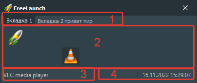

Элементы интерфейса:
-
Вкладки
Вы можете настраивать количество вкладок и переименовывать каждую вкладку.
-
Содержимое вкладок
Вы можете разместить любое количество ярлыков на нескольких вкладках.
-
Информация о кнопке
Показывает описание к кнопке, над которой сейчас находится курсор.
-
Дата и время
Показывает текущие дату и время.
Горячие клавиши:
-
Alt + Левая кнопка мыши
При удерживании этой комбинации клавиш на любой кнопки производится перемещение главного окна приложения.
-
Ctrl + Левая кнопка мыши
При удерживании этой комбинации клавиш производится перемещение кнопки или вкладки в главном окне приложения.
-
F1
При нажатии этой клавиши открывается файл справки.
-
F2
При нажатии этой клавиши открывается окно для изменения имени вкладки.
-
Ctrl + Q
При нажатии этой комбинации клавиш производится завершение работы приложения.
-
Ctrl + S
При нажатии этой комбинации клавиш открывается окно настроек приложения.
-
Alt + F4
При нажатии этой комбинации клавиш главное окно приложения скрывается.
-
Ctrl + Win
После нажатия этой глобальной комбинации клавиш (не только в приложении) показывается или скрывается главное окно приложения.